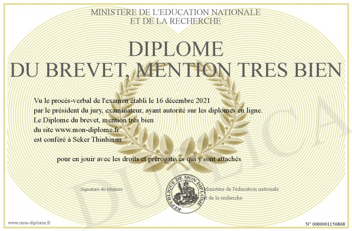

Le Diplôme national du brevet (DNB) est un examen français délivré aux élèves à la fin du collège, généralement en classe de troisième. Il atteste des connaissances et compétences acquises durant le cycle 4 du collège (de la 5e à la 3e). Le brevet est composé de plusieurs épreuves écrites et orales portant sur différentes matières telles que le français, les mathématiques, l’histoire-géographie, ainsi que des évaluations en sciences et une épreuve orale.
Détails
Année d'obtention : 2020
Institution : Collège Anne Frank
Commentaires : Obtention avec mention Très Bien.
